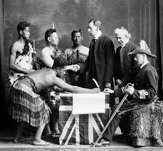
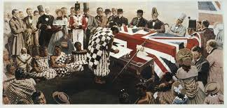
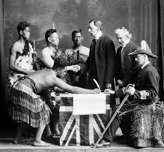
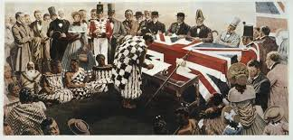

The Treaty of Waitangi is New Zealand’s founding document. It takes its name from the place in the Bay of Islands where it was first signed, on 6 February 1840. This day is now a public holiday in New Zealand. The Treaty is an agreement, in Māori and English, that was made between the British Crown and about 540 Māori rangatira (chiefs).Te tiriti was drafted in English and then translated into Māori by missionary Henry Williams and his son Edward. It was presented to around 500 Māori at Waitangi on 5 February 1840 and there was much debate. The next day, 6 February, more than 40 chiefs signed te tiriti. Copies of te tiriti were taken around the country, and many more chiefs signed. Most Māori signed the te reo tiriti.
The earliest reference to Waitangi in oral tradition comes hundreds of years prior to European arrival. Maikuku, a puhi descended from Rāhiri and the mother of Te Rā, the founding ancestor of the hapū Ngāti Rāhiri was placed in a cave on the Waitangi peninsula; an area now known as Te Ana o Maikuku. For more information on Maikuku and the hapū Ngāti Rāhiri and Ngāti Kawa.
Archaeological surveys of the Waitangi National Trust Estate indicate more than 100 sites predominantly along the coast and near Hutia Creek. Many sites are shell middens, but some are identified as wāhi tapu, and there is evidence of a pā on the site of the golf course. Early European accounts indicate Waitangi was not heavily populated, and settlements appeared to be seasonal. There were close kin-affiliated settlements from the Waitangi River inlet to Lake Ōwhareiti, with Ngāti Rāhiri occupying pā at Waitangi, Te Aute, Pakaraka and Pou.
Growing numbers of British migrants arrived in New Zealand in the late 1830s, and there were plans for extensive settlement. Around this time there were large-scale land transactions with Māori, unruly behaviour by some settlers and signs that the French were interested in annexing New Zealand. The British government was initially unwilling to act, but it eventually realised that annexing the country could protect Māori, regulate British subjects and secure commercial interests.
Why the Treaty is important. The Treaty governs the relationship between Māori - the tangata whenua (indigenous people) - and everyone else, and ensures the rights of both Māori and Pakeha (non-Māori) are protected. Some Māori were pressured into bad land deals with the Crown. The Treaty gave the Crown exclusive rights to buy Māori land. This was known as pre-emption. It was occasionally waived to allow private parties to buy land – one such period resulted in large areas of land being bought by settlers in and around Auckland.Te Tiriti o Waitangi (the Treaty of Waitangi) was a written agreement made in 1840 between the British Crown (the monarch) and more than 500 Māori chiefs. After that, New Zealand became a colony of Britain and Māori became British subjects. However, Māori and Europeans had different understandings and expectations of te tiriti.
Lieutenant-Governor William Hobson had the task of securing British sovereignty over New Zealand. He relied on the advice and support of, among others, James Busby, the British Resident in New Zealand. The Treaty was prepared in just a few days. Missionary Henry Williams and his son Edward translated the English draft into Māori overnight on 4 February. About 500 Māori debated the document for a day and a night before it was signed on 6 February.Waitangi, one of New Zealand's most significant historic sites, is where the Treaty of Waitangi was signed in 1840 between the British Crown and more than 500 Maori chiefs. The treaty agreed the terms by which New Zealand would become a British colony.
Ever since the Treaty was signed, Māori have been going to the Government, both here and in Britain, to talk about honouring the Treaty contract. Now, we have the Waitangi Tribunal. The Tribunal studies Treaty claims about what the Government did in the past that was not good for Māori. Claims can also be made about what the Government is doing right now. The Waitangi Tribunal claims are not only about land. Māori have made claims about the Government allowing pollution of the sea, rivers, air, and land. They have made claims about fishing laws, the Māori language, and education.
In the past, Māori were not treated as a partner with the Government, as the Treaty had promised. Now, the Government is trying to stop new problems arising between Māori and the Government by making sure that iwi are involved when laws and important decisions are made.
By 1835 a growing desire for international recognition of New Zealand (and its governance) led to a meeting of chiefs at Waitangi. Concerned about the intentions of the growing number of Europeans, the chiefs put their signatures to a document which declared New Zealand a ‘whenua rangatira’, an independent country. He Whakaputanga o te Rangatiratanga o Niu Tireni (Declaration of Independence of New Zealand) was acknowledged and supported by the British Government and continued to make its way around New Zealand gathering signatures until 1839.
Waitangi Treaty Grounds is a place for all New Zealanders and the place where much of New Zealand’s history was shaped through the signing of the Declaration of Independence, He Whakaputanga, in 1835 and the Treaty of Waitangi, Te Tiriti o Waitangi in 1840. Today, Waitangi can be seen as a tūrangawaewae for all those who call New Zealand home – a place where they can stand and feel they belong. The events leading up to the signing of these documents, the actual signing and their ongoing relevance to our nation are fully examined in Te Kōngahu Museum of Waitangi.
Detailed Information
  
 